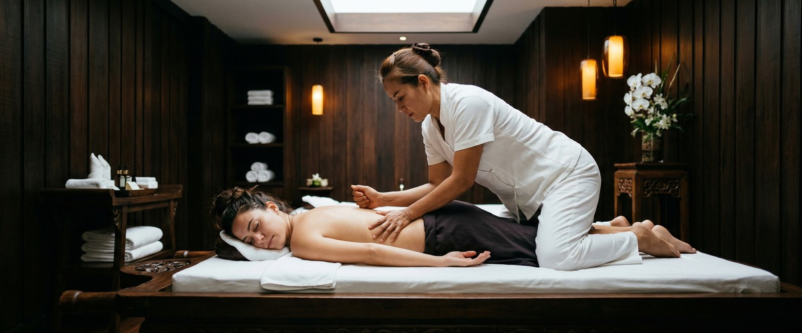
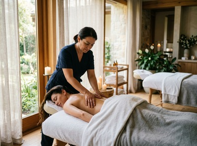
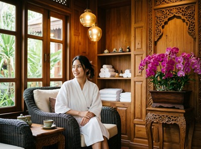

Whether you're celebrating a milestone or simply making time for each other, a couples massage in Glasgow lets two people share the same restorative experience side by side.

You each have your own therapist, your own session tailored to your needs, and a room set aside entirely for the two of you.
A couples massage is a shared treatment where two guests receive massages simultaneously in the same private room, each attended by a dedicated therapist. At Serendipity Massage Therapy & Wellness, you choose from our full range of treatments: traditional Thai massage, Thai oil massage, Swedish massage, hot stone massage, aromatherapy massage, or sports massage. Because each therapist works independently, you and your partner can choose different treatments, different pressures, and different focus areas. No compromise required.

The session draws on whichever techniques you select. Swedish massage uses long, flowing strokes to ease muscle tension and calm the nervous system. Thai oil massage combines therapeutic oils with targeted pressure and gentle stretching. Hot stone massage introduces heated basalt stones to release deep-seated tension in tired muscles. Your therapist will take a brief consultation before you begin, so the treatment reflects exactly what your body needs that day.
Couples massage in Glasgow suits any two people who want to share a treatment: partners marking an anniversary or birthday, friends treating themselves, or colleagues unwinding after a demanding period. It works particularly well for one person who loves massage and one who has never tried it. The familiar company and calm environment make it an easy introduction for first-timers, while the experienced guest gets the full benefit of a session built around their preferences.

Sessions are available in 60, 90, or 120-minute durations. You will arrive together, complete a brief health and preference form, and be shown to your shared treatment room at Serendipity's suite on Hope Street in Glasgow city centre. The room is prepared with soft lighting and a calm atmosphere designed for two. Your therapists will both be present throughout, so the experience stays in sync. After the session, you are welcome to take a few quiet minutes before heading back out into the day.
At Serendipity Massage Therapy & Wellness, every couples massage is delivered by the same professionally trained team that handles all our individual treatments. The signature techniques developed by head therapist Jariya Malone are applied consistently across the team, so the quality of your session does not depend on who you are booked with. Both guests receive the same standard of care, in the same room, at the same time.
No. Because each person has their own dedicated therapist, you can choose entirely different treatments. One of you might book a traditional Thai massage while the other opts for a hot stone massage or Swedish massage. Each session is tailored individually, so both people get exactly what they are looking for.
This depends on the treatment you choose. Traditional Thai massage is performed fully clothed, so comfortable, loose-fitting clothing is ideal. Oil-based treatments such as Thai oil massage and Swedish massage require you to undress to your comfort level; you will be professionally draped throughout the session. Your therapist will explain what is needed when you arrive.
Most guests leave feeling physically lighter, calmer, and more rested. Muscle tension eases, and the mental noise of a busy week tends to quiet down noticeably. Drink plenty of water afterwards, and if you have had deeper work such as sports massage or hot stone massage, allow a little time before returning to strenuous activity.
Absolutely. A couples massage is one of the most comfortable ways to experience massage for the first time, since you have familiar company throughout. Let your therapist know during the consultation and they will guide the pressure and technique to suit a first-timer, ensuring the session is relaxing rather than overwhelming.
Couples massage requires two therapists to be available simultaneously, so booking ahead is recommended, especially for weekends and around holidays such as Valentine's Day and anniversaries. A few days' notice is usually sufficient for midweek appointments, but for a specific date or time, earlier is better.
The treatment itself is identical in quality and technique. The difference is that both guests are in the same private room at the same time, each with their own therapist working simultaneously. It is the shared experience that makes it distinct, not a diluted version of a regular session. You each receive the same level of individual care as you would in a solo booking.